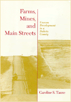

<body bgcolor="#FFFFFF" text="#000000" link="#0000FF" vlink="#CC0000" alink="#CC0000"><center><hr width="350" size="1" align="center" noshade>An ethnographic study of the uneasy partnership between a community and corporate industry<hr width="350" size="1" align="center" noshade><p><a href="https://cdcshoppingcart.uchicago.edu/Cart/ChicagoBook.aspx?ISBN=9781566390705&&PRESS=temple" target="_top">Buy this book!</a> | <a href="https://cdcshoppingcart.uchicago.edu/Cart/Cart.aspx?PRESS=temple" target="_top">View Cart</a> | <a href="https://cdcshoppingcart.uchicago.edu/Cart/Cart.aspx?PRESS=temple" target="_top">Check Out</a></p><p></p></center><!--none//--><h1>Farms, Mines, and Main Streets</h1>
<H2>Uneven Development in a Dakota County</H2>
<h3>Caroline S. Tauxe</h3>
<P>cloth 1-56639-070-2 $74.50, Sep 93, <FONT COLOR=#990033>Out of Stock Unavailable</FONT>
<BR> 288 pp
6x9
10&nbsp;tables 3&nbsp;figures
</P><p>Links between the global and the local economy secure the chain of events in this ethnographic study of Mercer County, North Dakota, an agricultural and mining district that embraced "progress" when faced with economic decline.
<p>Caroline S. Tauxe explores social, political, and economic transformations&#151and tradeoffs&#151that occurred during an industrial boom and its aftermath between 1978 and 1991. Although they gained new businesses, increased population, and a modernized infrastructure, Mercer County residents relinquished local control and autonomy.
<BR>&nbsp;<h2>Contents</h2><P>
<p>Maps
<br>Acknowledgments
<br>1. Linking the Global and the Local
<br>2. A Century of Transformation
<br>3. Currents in Political Culture
<br>4. Lowering the Energy Boom
<br>5. The Politics of Planning
<br>6. Living with Development
<br>7. Patterns of Power: Changes in Political Economy
<br>8. The Price of Progress
<br>Notes
<br>Bibliography
<br>Index
</P><BR>&nbsp;<H2>About the Author(s)</H2>
<P><b>Caroline S. Tauxe</b> is a visiting scholar in the Department of Anthropology at Cornell University.</P>
<BR><H2>Subject Categories</H2>
<p><A HREF="/tempress/urban.html" TARGET="_top">Urban Studies</a>
</p>
<BR><h2 class="inpageheading">In the series</H2>
<P><I><a href="http://www.temple.edu/tempress/conflicts.html" onMouseOver="window.status='Click for other books in this series!'; return true;" onMouseOut="window.status=''; return true;" target="_top">Conflicts in Urban and Regional Development</a></i>, edited by John R. Logan and Todd Swanstrom.
</p><p><i>Conflicts in Urban and Regional Development</i>, edited by John R. Logan and Todd Swanstrom, includes books on urban policy and issues of city and regional planning, accounts of the political economy of individual cities, and books that compare policies across cities and countries.</p>
<p align="center"><a href="https://cdcshoppingcart.uchicago.edu/Cart/ChicagoBook.aspx?ISBN=9781566390705&&PRESS=temple" target="_top">Buy this book!</a> | <a href="https://cdcshoppingcart.uchicago.edu/Cart/Cart.aspx?PRESS=temple" target="_top">View Cart</a> | <a href="https://cdcshoppingcart.uchicago.edu/Cart/Cart.aspx?PRESS=temple" target="_top">Check Out</a></p><p><font face="Arial" size="1"><a href="copyright.html" onMouseOver="window.status='Web Copyright Policy';return true;" onMouseOut="window.status=''" title="Web Copyright Policy">&copy;</a> 2015 <a href="http://www.temple.edu" target="new" onMouseOver="window.status='Link to Temple University home page';return true;" onMouseOut="window.status=''" title="Link to Temple University home page">Temple University</a>. All Rights Reserved. http://www.temple.edu/tempress/titles/962_reg.html</font></p>